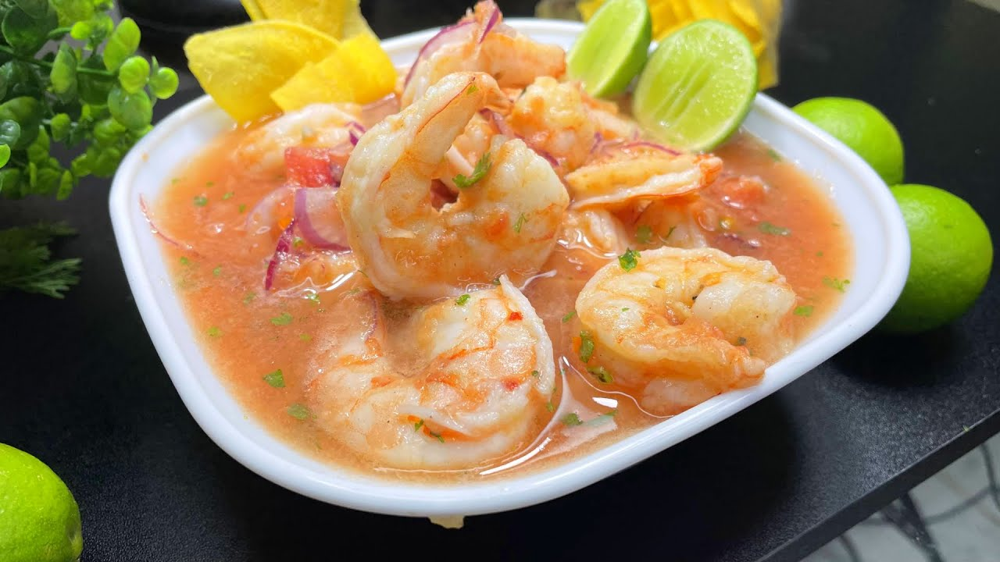

Hornado
Cerdo asado lentamente, acompañado de mote y llapingachos.

Ceviche de Camarón
Camarones marinados en jugo de limón con tomate, cebolla y cilantro.

Menestra con Carne
Tradicional guiso de lentejas servido con arroz y carne a la parrilla.

Fanesca
Sopa típica de Semana Santa con granos, bacalao y huevo duro.

Llapingacho
Tortillas de papa cocida y machacada, con queso, achiote y cebolla, fritas hasta quedar doradas y crujientes.

Encebollado
Sopa de pescado que contiene albacora, yuca, tomate, cebolla colorada, cilantro, ají en polvo, comino y otras especias.